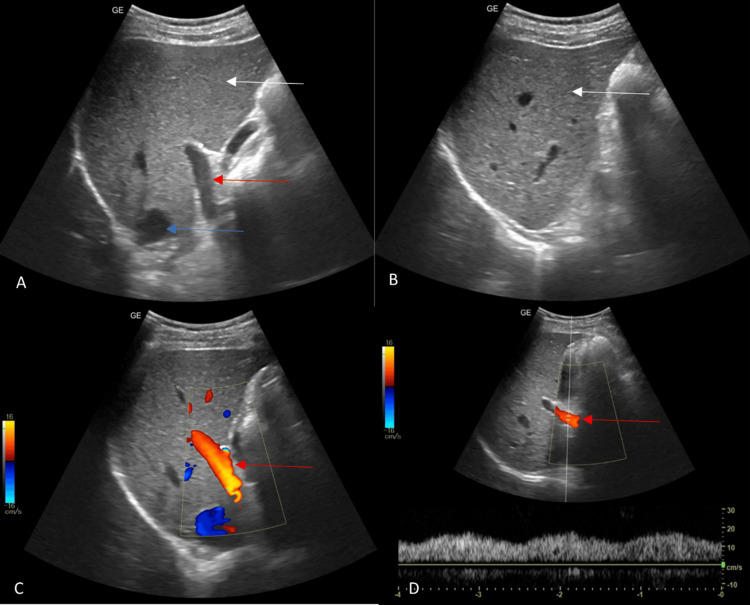

Ficha del catálogo
Hipertensión portal
- Sistema
- Digestivo
- Modalidad
- US
- Región
- Sistema portal y bazo
- Dificultad
- Intermedio
Es el aumento de la presión en el territorio venoso portal, en la mayoría de los casos por cirrosis, aunque también puede tener causas prehepáticas como la trombosis portal y posthepáticas como la obstrucción del drenaje venoso. Sus consecuencias clínicas son las varices, la ascitis, la esplenomegalia y la encefalopatía. La imagen detecta los signos indirectos y las vías colaterales.
Técnica
El ultrasonido con Doppler es el estudio inicial. Se explora en ayuno para reducir el gas y para evitar el aumento posprandial del flujo esplácnico, con transductor convexo y ángulo de insonación adecuado. Se valoran el calibre y el flujo de la vena porta, el bazo, la existencia de colaterales y la presencia de ascitis. La elastografía hepática y esplénica aporta información adicional sobre la rigidez del parénquima.
Qué observar
- Calibre de la vena porta, que suele estar aumentado, y pérdida de su variación con la respiración
- Dirección del flujo portal, con inversión hacia el bazo en las fases avanzadas
- Velocidad media del flujo portal, que disminuye conforme aumenta la resistencia
- Vías colaterales, en especial la vena gástrica izquierda, las gástricas cortas, las esplenorrenales y la vena umbilical recanalizada
- Esplenomegalia y ascitis como signos indirectos de valor
- Morfología del hígado con contorno nodular, atrofia del lóbulo derecho e hipertrofia del caudado y del segmento lateral izquierdo
Hallazgos
El hígado suele mostrar contorno irregular y redistribución del volumen entre los lóbulos, con signos de hepatopatía crónica. La vena porta aparece dilatada y con flujo lento, monofásico y con pérdida de la modulación respiratoria, y en fases avanzadas el flujo se invierte y se hace hepatófugo. La recanalización de la vena umbilical dentro del ligamento redondo es un signo muy específico. El bazo se agranda y aparecen colaterales tortuosas en el hilio esplénico y en la región gastroesofágica. La ascitis completa el cuadro y suele indicar descompensación.
Perlas
El flujo hepatófugo en la porta es muy específico pero tardío, mientras que la desaparición de la variación respiratoria y la lentitud del flujo aparecen antes. La visualización de colaterales, sobre todo la vena umbilical recanalizada y la dilatación de la vena gástrica izquierda, es de los datos más útiles y más reproducibles. Conviene explorar en ayuno, ya que después de comer las velocidades portales aumentan y pueden enmascarar el hallazgo.
Diagnóstico diferencial
- Trombosis portal
- Material endoluminal sin flujo en el vaso, con cavernomatosis si es crónica.
- Síndrome de obstrucción del drenaje venoso hepático
- Venas suprahepáticas no visibles o con flujo anómalo e hipertrofia marcada del lóbulo caudado.
- Congestión hepática por insuficiencia cardiaca
- Vena cava y suprahepáticas dilatadas con flujo muy pulsátil y reflujo, sin contorno hepático nodular.
- Hipertensión portal segmentaria por trombosis esplénica
- Varices gástricas aisladas con hígado normal y antecedente de pancreatitis o de tumor pancreático.
- Esquistosomiasis hepática
- Engrosamiento periportal marcado con fibrosis en el contexto epidemiológico adecuado.
Simuladores
- Aumento fisiológico del calibre portal tras la ingesta
- Vena porta prominente en pacientes jóvenes y delgados sin hepatopatía
- Vasos del hilio esplénico normales confundidos con colaterales
Por modalidad
- US
- Método inicial por su disponibilidad y por la información dinámica del Doppler sobre la dirección y la velocidad del flujo
- TC
- Mapea todas las colaterales y valora la permeabilidad del eje esplenoportal antes de un procedimiento
- RM
- Ofrece información similar a la tomografía sin radiación y caracteriza mejor el parénquima hepático
Protocolo
Ultrasonido en ayuno de 6 a 8 horas con transductor convexo, valorando la vena porta en el hilio con ángulo Doppler menor de 60 grados, el bazo en su eje mayor y las regiones del ligamento redondo, del hilio esplénico y de la unión gastroesofágica. En tomografía y resonancia se usan fases arterial y portal con reconstrucciones coronales, que muestran el mapa completo de colaterales.
Clasificación
Errores frecuentes
- Explorar sin ayuno y sobreestimar las velocidades portales
- Concluir permeabilidad portal con un ajuste de Doppler inadecuado para flujos lentos
- Informar esplenomegalia y ascitis sin buscar de forma dirigida las vías colaterales

hipertension portal Doppler colaterales vena umbilical recanalizada esplenomegalia varices cirrosis